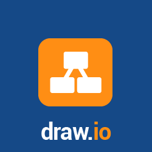

| Swagger Editor Design, describe, and document your API on the first open source editor fully dedicated to OpenAPI-based APIs. The Swagger Editor is great for quickly getting started with the OpenAPI (formerly known as the Swagger Specification) specification, with support for Swagger 2.0 and OpenAPI 3.0. | https://apps.thejeshgn.com/swagger-editor/#!/?import= | |
| Swagger UI allows anyone — be it your development team or your end consumers — to visualize and interact with the API’s resources without having any of the implementation logic in place. It’s automatically generated from your OpenAPI (formerly known as Swagger) Specification, with the visual documentation making it easy for back end implementation and client side consumption. | https://apps.thejeshgn.com/swagger-ui/?url= | |
|  | Draw.io is a free to use online diagramming application. | Needs proxy! |
| FREEBOARD is an open source real-time dashboard builder for IOT and other web mashups. A free open-source alternative to Geckoboard. | https://apps.thejeshgn.com/freeboard/index.html#source= |